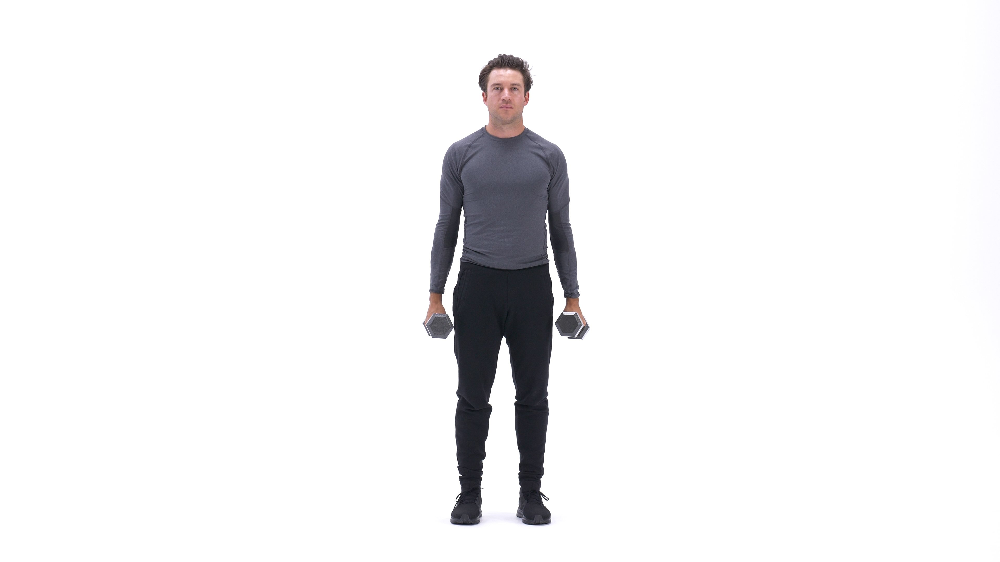
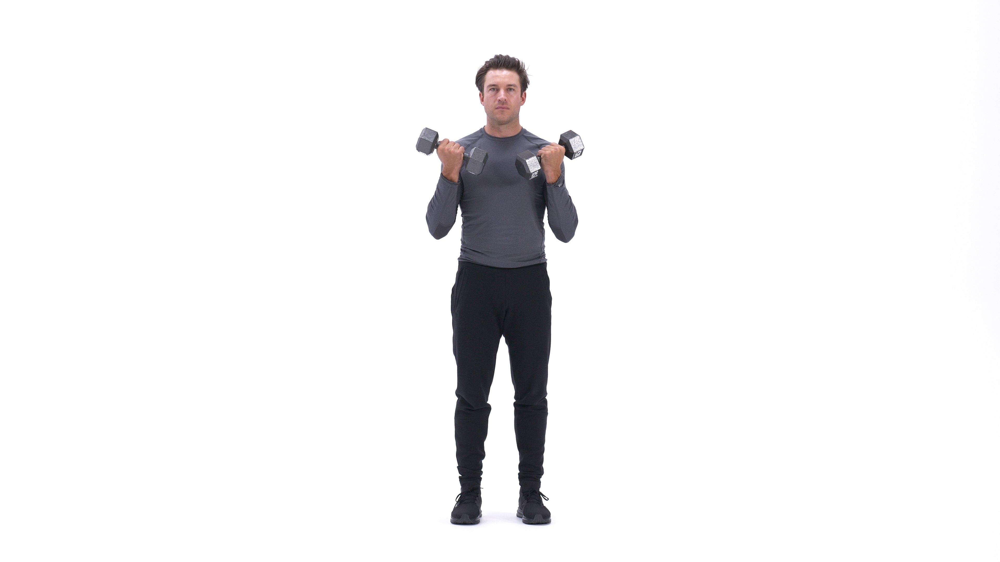

The dumbbell biceps curl is a single-joint exercise for building bigger and stronger biceps. Popular among gym goers of all experience levels, this move can be done seated or standing. It is generally performed for moderate to high reps, such as 8-12 reps or higher, as part of the arm-focused portion of a workout.
1. Stand up straight with a dumbbell in each hand at arm's length. Keep your elbows close to your torso and rotate the palms of your hands until they are facing forward. This will be your starting position.
2. Now, keeping the upper arms stationary, exhale and curl the weights while contracting your biceps. Continue to raise the weights until your biceps are fully contracted and the dumbbells are at shoulder level. Hold the contracted position for a brief pause as you squeeze your biceps.
3. Then, inhale and slowly begin to lower the dumbbells back to the starting position.
4. Repeat for the recommended amount of repetitions.
1. Permits wrist supination, unlike the barbell version.
2. Allows you to target the biceps.
3. More time efficient than the alternating dumbbell curl.
4. Simple way to build biceps size and strength.
This is the Bicep Curl in the down position.
This is the Bicep Curl in the up position.
